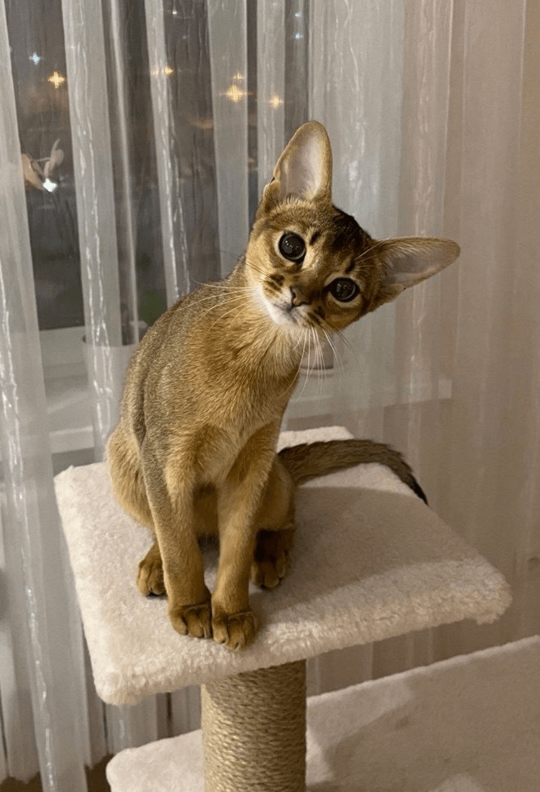
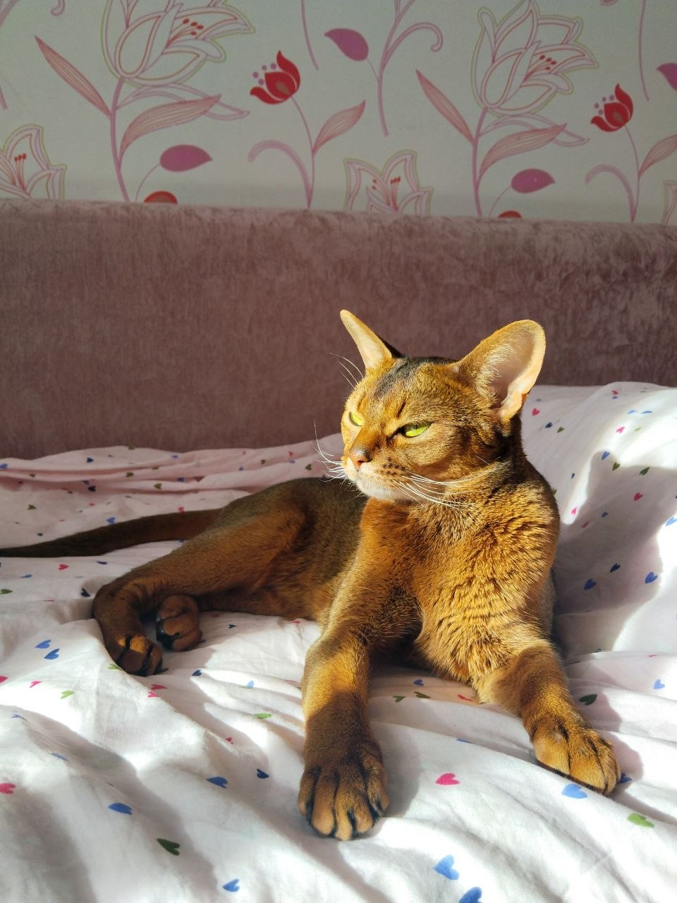
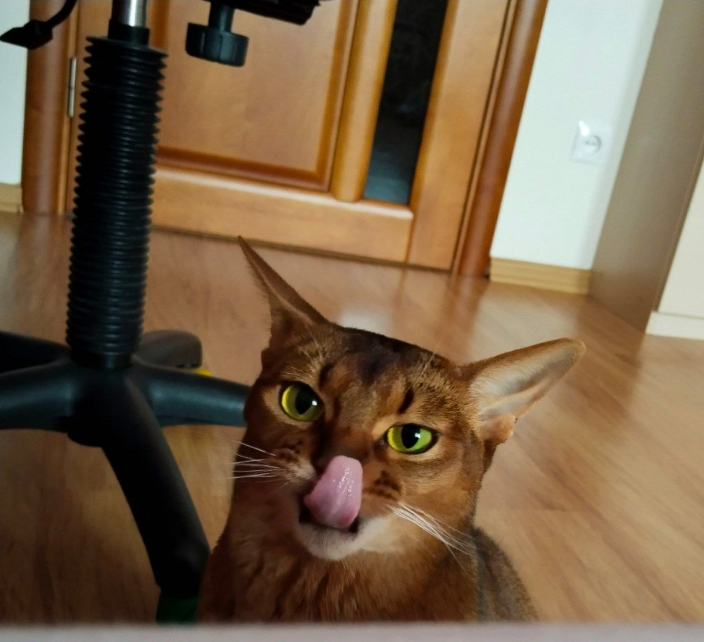
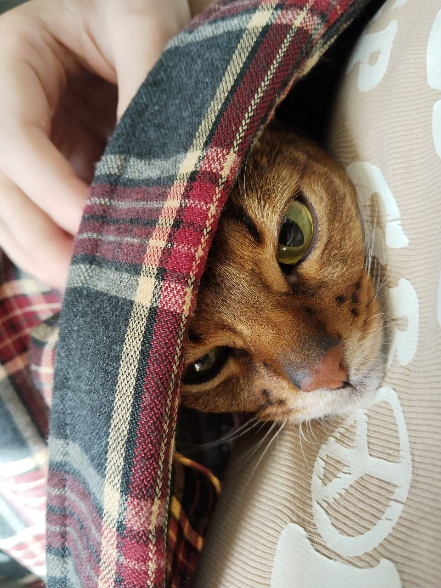
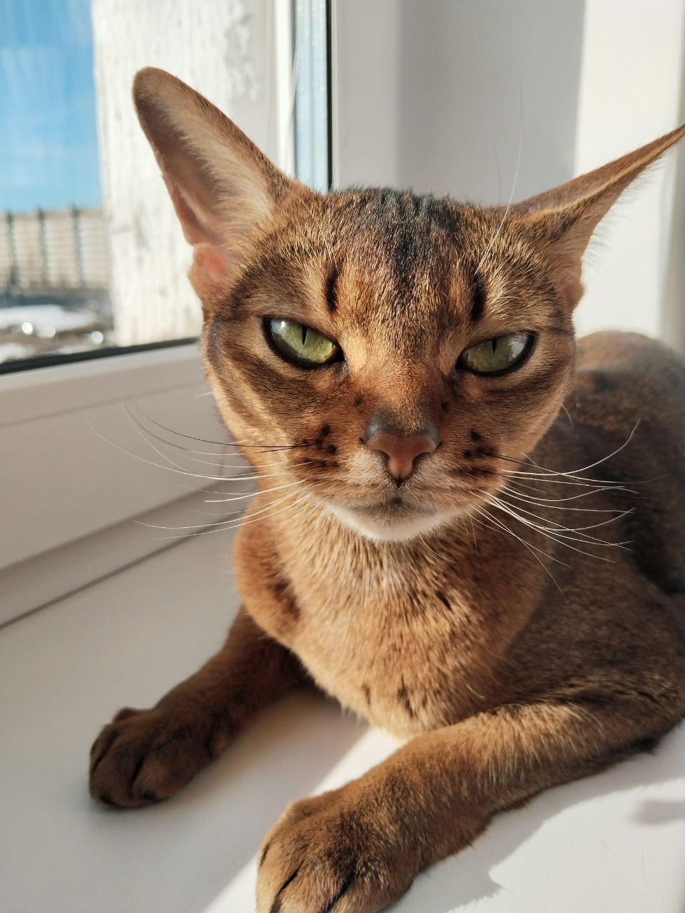
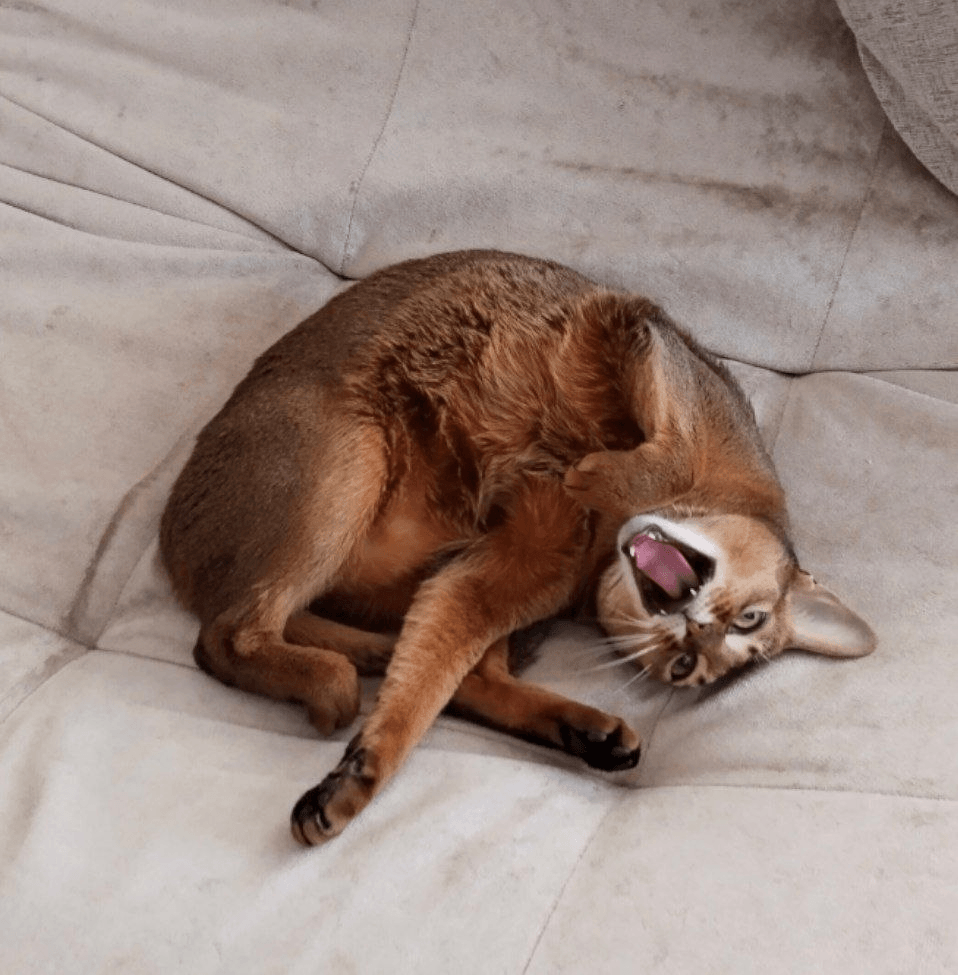
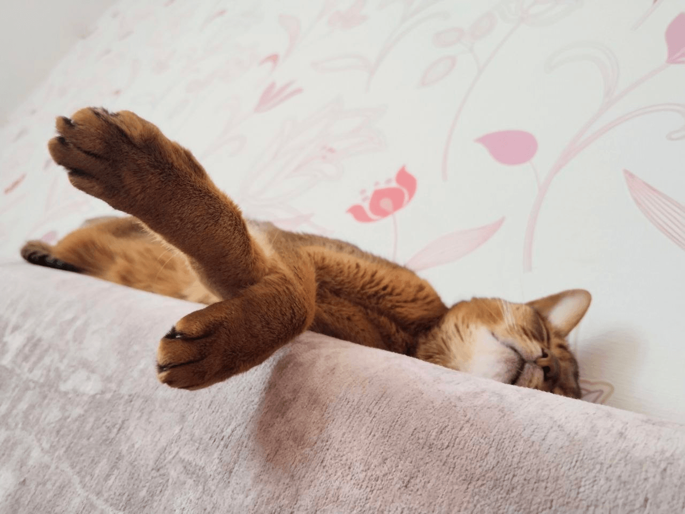

Это было самое начало пути. На этом этапе важно было проникнуться основами и настроиться на учёбу. И,
возможно, подумать, как новые знания могут повлиять на ваше будущее.
Помню, как волнительно было начинать. Не из-за сложности информации — она была знакомой, а из-за страха не
успеть всё совмещать и подвести себя.
1 спринт: Я — чистый лист

<интерес>
На первых этапах мы работали со страхами и сомнениями, которые часто испытывают новички. Один из них — страх
перед чистым листом. Это, конечно же, намного сложнее, чем боязнь куска бумаги. Часто за этим ощущением
скрываются более глубокие вопросы: с чего начать? а вдруг будет слишком сложно? что, если я не справлюсь?
Это было волнительно и интересно. Чистый лист превратился в азарт: "Смогу ли я всё это сделать? На что я
способен?"
1 спринт: А если не получится?

<увереность>
Первый проект — позади! Но это всё ещё самое начало пути. Радость могла быстро померкнуть и смениться
ожиданием провала. Или вы, наоборот, могли вдохновиться успехами и поверить в себя.
Появилось ощущение, что ты можешь, что ты справился и впереди ждёт только больше.
2 спринт: Погоня за идеалом

<стремление>
На этом этапе вы уже достаточно разбирались в основах вёрстки, чтобы понять, как много ещё впереди. Вы могли
попытаться погнаться за идеалом и понять, что он недостижим. А, может, вы вовсе и не подвержены
перфекционизму и вместо того, чтобы сделать идеально, старались просто сделать.
На старте второго спринта была на подъёме: первый спринт дался легко, мотивация зашкаливала. По ходу поняла,
как много ещё не знаю, но это не останавливало.
2 спринт: О тех, кто рядом

<семья>
Всё это время вы были не одиноки (хотя, возможно, иногда и чувствовали, что одни против целого мира). Вас
окружали одногруппники, команда сопровождения и просто близкие люди, которым можно пожаловаться, если
очередной макет просто так не поддавался. Осваивать что-то новое легче, когда рядом есть единомышленники, не
правда ли?
Приятно было осознавать, что я не одна со своими трудностями — все через это проходят. И, конечно, спасибо
родным за поддержку.
3 спринт: Обходные стратегии

<способ>
На этом курсе вы постоянно решали разные задачи. В какой-то момент вам могло показаться, что решения просто
иссякли. Значит, пришло время посмотреть на задачу под другим углом.
Моим девизом на этот спринт стала фраза: «Глаза боятся, а руки делают».
3 спринт: Когда опускаются руки

<время>
Во время учёбы часто возникает чувство, когда не знаешь, за что хвататься. Вроде и проектную пора сдавать, и
задачи хочется порешать, и в теории получше разобраться, и жизнь не забыть пожить. В такие моменты очень
нужна концентрация. Вспомните, откуда вы её черпали.
Тут я впервые за курс столкнулась с проблемой тайм-менеджмента: всё наложилось — и задачи из обычной жизни,
и учёба, и курс. Было тяжело.
«Сейчас я здесь»

<фух>
Сейчас вы уже очень много знаете о вёрстке. Но это только начало. Во-первых, впереди ещё много материала про
«красотищу». Во-вторых, с окончанием курса учёба не заканчивается. Вёрстка — это целый мир. И этот мир
постоянно меняется. Познать его полностью не получится, но это тот случай, когда важен сам процесс познания.
Ведь часто путь — и есть результат.
Ощущение, что долгий путь пройден, но впереди — ещё больше. В предвкушении новых знаний.